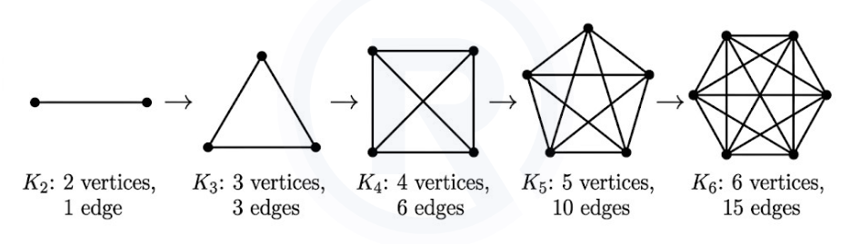
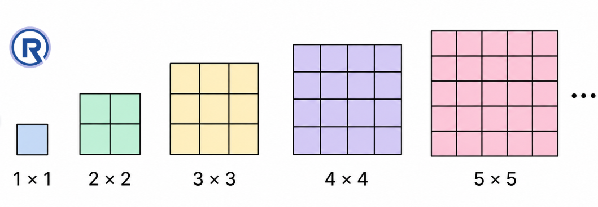
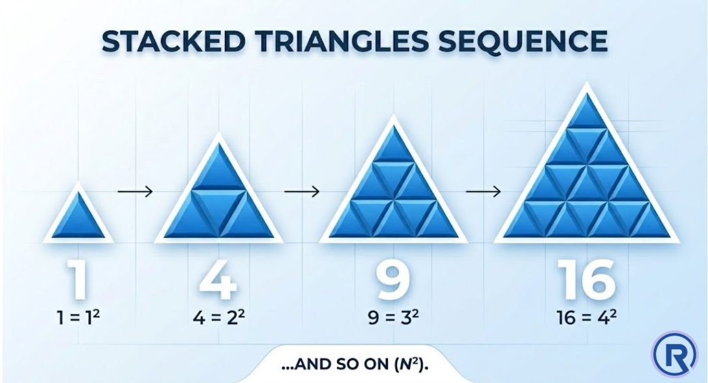
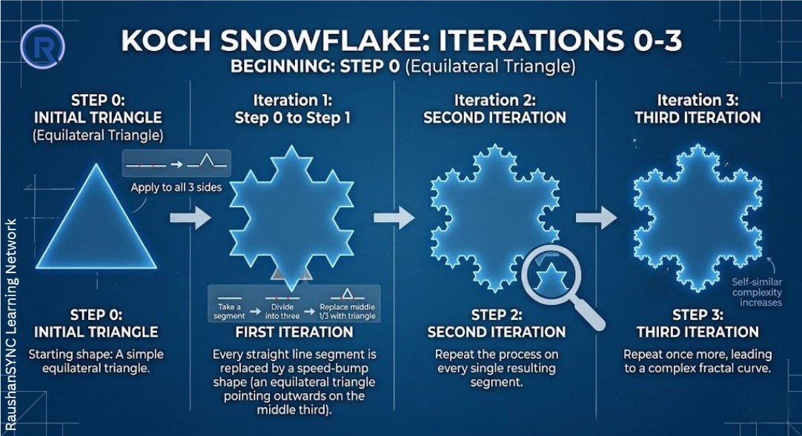

Part 6: Patterns in Mathematics
Section B: Shape Sequences, Deeper Relationships, and the Mathematics of Geometry
1. Big Picture Overview
Numbers are not the only things that form patterns. Shapes do too.
In this section, you will discover that sequences of shapes - where each shape follows from the previous one by a consistent rule - are just as rich and structured as sequences of numbers. More surprisingly, shape sequences and number sequences are often deeply connected: the shapes you draw encode numbers, and those numbers turn out to be famous sequences you already know.
This connection between geometry (the study of shapes) and number theory (the study of numbers) is one of the most beautiful features of mathematics. It shows that these are not separate subjects - they are two languages for the same underlying reality.
Shape sequences and number sequences are not separate ideas. They are different expressions of the same mathematical structure, and this section shows how geometry and arithmetic speak to each other.
2. Core Concepts
Concept 1 — Shape Sequences
a. Intuitive Explanation
Just as number sequences list numbers in order where each follows from the previous, shape sequences list shapes in order where each follows from the previous by a consistent rule of construction.
The pattern is not in the numbers that describe the shapes - it is in the visual structure itself. Yet when you count certain features of these shapes (sides, corners, interior pieces), you recover famous number sequences.
b. Formal Idea
A shape sequence is an ordered list of geometric shapes where each shape is generated from the previous one by a consistent rule.
Some key shape sequences:
- Regular Polygons: Triangle → Quadrilateral → Pentagon → Hexagon → Heptagon → Octagon → Nonagon → Decagon → ...
-
Complete Graphs: K2 → K3 → K4 → K5 → K6 → ...

-
Stacked Squares: A single unit square → A 2×2 arrangement → A 3×3 arrangement → ...

-
Stacked Triangles: A single small triangle → A triangle made of 4 small triangles → A triangle made of 9 small triangles → ...

-
Koch Snowflake: Beginning with a triangle, each step replaces every straight line segment with a speed-bump shape.

c. Deep Explanation
Why are these sequences important beyond being visually interesting?
Because the rules that generate them are mathematical rules - they are precise, unambiguous, and repeatable. And the shapes produced by these rules have measurable properties (number of sides, area, perimeter, contained pieces) that connect to number sequences in structured ways.
The regular polygon sequence is the most conceptually straightforward: the shapes are distinguished entirely by their number of sides, and the side count runs through the counting numbers starting at 3. This sequence is infinite - there is no "largest" polygon.
Complete graphs encode connections. K3 is a triangle (3 points, 3 lines). K4 is a complete quadrilateral with diagonals (4 points, 6 lines). K5 has 5 points and 10 lines. The number of lines follows the triangular number sequence: 1, 3, 6, 10, 15 - and there is a beautiful reason why.
Stacked squares and stacked triangles encode square and "triangular + square" number relationships respectively in their areas.
The Koch Snowflake is the most striking example: the rule is simple, but applying it repeatedly produces a shape of infinite complexity - a boundary that becomes endlessly detailed with no straight segments remaining. This is an early glimpse of the mathematical concept of fractals - shapes that have the same pattern at every scale of magnification.
d. Common Misconceptions
Misconception: "Shape sequences are a geometry topic - they have nothing to do with numbers."
Why it is incorrect: As you will see in the next concept, counting the features of these shapes directly produces famous number sequences. Geometry and number theory are connected at the deepest level.
Misconception: "The Koch Snowflake is just an art project, not real mathematics."
Why it is incorrect: The Koch Snowflake is a mathematically defined object generated by a precise rule. It has well-defined properties (the number of line segments follows a power sequence). It is one of the earliest examples of what mathematicians later formally called a fractal - a legitimate and important area of modern mathematics.
Concept 2 — How Shape Sequences Connect to Number Sequences
a. Intuitive Explanation
When you count specific features of the shapes in a sequence - the number of sides, the number of lines connecting points, the number of small squares, the number of small triangles - you get back number sequences you already know. This is not coincidence. It reveals that the shapes and the numbers are expressing the same underlying structure from different angles.
b. Formal Idea and Deep Explanation
Regular Polygons → Counting numbers starting at 3:
The triangle has 3 sides, the quadrilateral has 4, the pentagon has 5, the hexagon has 6. The sequence of side counts is 3, 4, 5, 6, 7, 8, 9, 10 - counting numbers beginning from 3.
The number of corners (vertices) also follows the same sequence: 3, 4, 5, 6, ... This is not a coincidence. In any closed polygon, every side is bounded by two corners, and every corner is bounded by two sides. The number of sides and corners must therefore be equal - because each side endpoint is a corner, and each corner is a side endpoint. This is a geometric fact.
K2 has 1 line. K3 has 3 lines. K4 has 6 lines. K5 has 10 lines. This is the triangular sequence: 1, 3, 6, 10, 15.
Why? In a complete graph with n points, every point connects to every other point. Point 1 connects to points 2, 3, ..., n - that is (n−1) connections. But point 2's connection to point 1 was already counted, so point 2 adds (n−2) new connections. Continuing this way: the total lines = (n−1) + (n−2) + ... + 1 = the (n−1)th triangular number. The triangular number sequence appears here because this exact sum - adding counting numbers from 1 up to some value - is precisely how triangular numbers are generated.
Stacked Squares → Square numbers:
A 1×1 arrangement has 1 unit square. A 2×2 has 4. A 3×3 has 9. A 4×4 has 16. The sequence is 1, 4, 9, 16, 25 - the square numbers. This is geometrically obvious: the nth stage is a square with n rows and n columns, containing n² unit squares.
Stacked Triangles → Square numbers (through "adding up and down"):
The first triangle has 1 small triangle. The second has 4. The third has 9. The fourth has 16. Again: square numbers.
But why? In the nth triangular arrangement, the rows contain 1, 3, 5, 7, ... (odd numbers) of small triangles. And you already know from Part 5 that the sum of the first n odd numbers is n². So the total count of triangles in the nth stacked triangle is the sum of the first n odd numbers - which is n². Square numbers arise from an entirely different geometric context here.
Koch Snowflake → Powers of 4, scaled by 3:
The first snowflake shape (an equilateral triangle) has 3 line segments. After one application of the rule, each segment becomes 4 segments, so there are 3 × 4 = 12 segments. After another application, each of those 12 becomes 4, giving 3 × 4 × 4 = 48. The sequence is 3, 12, 48, 192, 768 - each term being four times the previous, starting from 3. This is the sequence "3 times powers of 4."
c. Common Misconceptions
Misconception: "The square numbers appearing in both stacked squares and stacked triangles must mean those two shape sequences are the same."
Why it is incorrect: They are different shapes with different rules - but both happen to produce the same count of unit pieces. This is analogous to how both "sum of first n odd numbers" and "n × n" produce square numbers - different paths to the same destination. The connection is itself a mathematical finding worth understanding.
Misconception: "If I can just memorise which sequence each shape gives, that's enough."
Why it is incorrect: The value is not in the result but in the reasoning. Understanding why complete graphs give triangular numbers - because you're adding (n−1) + (n−2) + ... + 1 - deepens your understanding of both graph structure and triangular numbers simultaneously. Memorising the outcome without the reason gives you a fact; understanding the reason gives you a tool.
Concept 3 — The Unity of Mathematics
a. Intuitive Explanation
At this point, you have seen sequences of numbers and sequences of shapes, and you have found surprising connections between them. You have seen that the same number (like a square number) can arise from geometry (a dot grid), from arithmetic (adding odd numbers), and from counting (n × n).
This is not accidental. It is how mathematics works. Everything is connected - because all of mathematics emerges from a few basic principles about structure and pattern.
b. Formal Idea
Mathematics is a unified discipline. The branch that studies patterns in whole numbers is called number theory. The branch that studies patterns in shapes is called geometry. These are traditionally taught separately - but they are deeply interconnected, as this chapter demonstrates.
c. Deep Explanation
Consider what you have established in these two chapters:
Odd numbers (number sequence) → Square numbers (number sequence), explained by geometry (L-shaped layers in a square grid)
Triangular numbers (from counting numbers) + triangular numbers = square numbers
Complete graphs (geometry) → Triangular numbers (arithmetic sum of counting numbers)
Stacked triangles (geometry) → Square numbers (via summing odd numbers)
Koch Snowflake (geometry) → Powers of 4 scaled by 3 (number sequence)
The same sequence appears in different geometric contexts. Different sequences relate to each other through additive or multiplicative operations. Geometry and arithmetic speak to each other constantly.
This is the central message of this chapter: The world of mathematics is not a collection of separate rules. It is a web of connections, and every new idea you learn adds more threads to that web.
The skill you are developing is not the ability to memorise sequences or reproduce diagrams. It is the habit of asking: How does this connect to what I already know? What structure is producing this pattern? Can I see why, not just see that?
3. Important Distinctions
| Shape Sequence | Feature Counted | Number Sequence Produced | Why |
|---|---|---|---|
| Regular Polygons | Number of sides | Counting numbers from 3 | Each shape adds one side |
| Regular Polygons | Number of corners | Counting numbers from 3 | In polygons, sides = corners |
| Complete Graphs (Kn) | Number of line segments | Triangular numbers | Adding (n−1)+(n−2)+...+1 |
| Stacked Squares | Number of unit squares | Square numbers | n × n arrangement |
| Stacked Triangles | Number of unit triangles | Square numbers | Row counts are odd numbers; their sum = n² |
| Koch Snowflake | Total line segments | 3 × Powers of 4 | Each segment splits into 4 at every step |
4. Concept Checkpoints
- The Koch Snowflake sequence begins with 3 line segments, then 12, then 48. Without drawing the next stage, can you determine how many line segments the 5th Koch Snowflake shape has? What is the reasoning?
- In a complete graph with 6 points (K6), how many lines are there? Use the triangular number pattern to determine this - do not draw the graph. Then verify your reasoning.
- The sides of regular polygons form the sequence 3, 4, 5, 6, ... Why does this sequence never include 1 or 2? What would a regular polygon with 1 or 2 sides look like, and why is it impossible?
- You have seen that stacked triangles and stacked squares both produce square number sequences. Can you design a new shape sequence of your own that might produce the triangular number sequence? Describe the rule and the first three shapes.
5. Chapter-Level Mental Model
This chapter establishes the deepest and most important idea in the entire curriculum:
Mathematics is not a collection of isolated techniques. It is a unified search for patterns and their explanations - carried out through number, geometry, and their connections.
Every sequence in this chapter carries a rule. Every rule has an explanation. Every explanation connects to other ideas. And the same number sequences appear across completely different contexts - in arithmetic, geometry, nature, and technology - because they express universal structural truths.
The habit of mind this chapter builds is this: when you see a pattern, do not simply accept it and move on. Ask why it holds. Look for a picture. Look for a connection. Look for the structure that is generating the pattern.
That is what mathematicians do. That is what you are learning to do.
6. Whole-Chapter Summary Table
| Chapter | Central Ideas | Core Skill Developed |
|---|---|---|
| Introduction to Number Systems | Comparison, place value, numeration systems, estimation, Roman numerals | Structured reasoning about number size and representation |
| Whole Numbers | Zero, successor/predecessor, number line, operations as movement | Spatial intuition about numbers; foundation for all arithmetic |
| Patterns in Mathematics | Number sequences, shape sequences, their connections | Pattern recognition + explanation; mathematical curiosity |
This completes all 6 Parts of the RaushanSYNC Core Concept Notes for this unit.
These notes are designed to develop understanding that lasts - not for an examination, but for a lifetime of clear thinking.
End of Part 6: This completes the unit.
↩ Back to Chapter Index